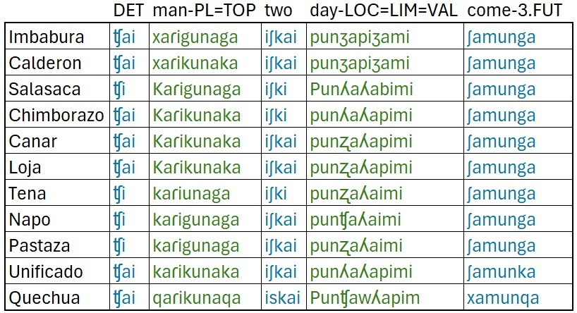
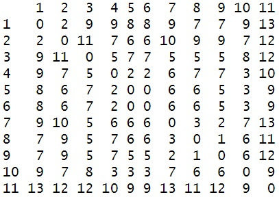
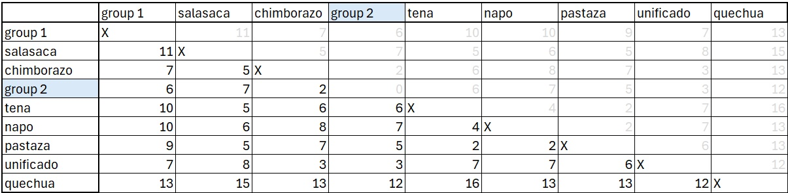
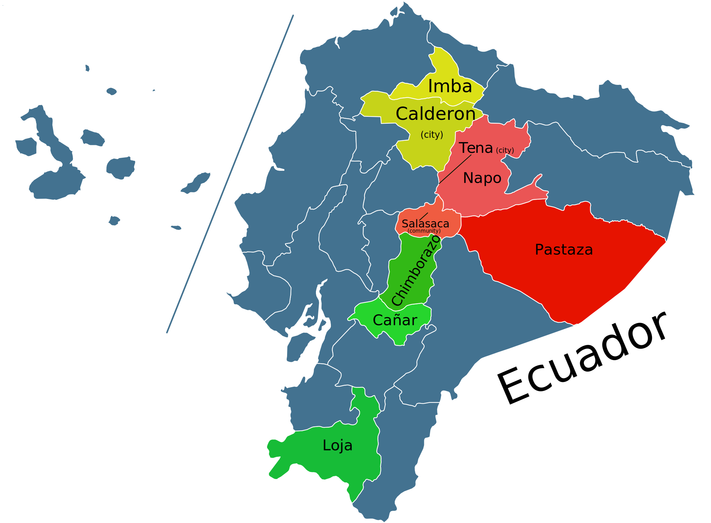

Dendrogram
Dr. Jesse Stewart
2025-08-12
1 Introduction
1.1 What is a “Dendrogram”?
A dendrogram is a tree-like diagram that shows how a set of items group together based on similarity or distance. In computational linguistics, we can use it to visualize how words or dialects relate to each other. Each branch represents a split: items joined lower down the tree are more similar, while those joined higher up are more distant.
When applied to language data, dendrograms give us a way to see
clustering patterns — for example, which dialects of Kichwa are most
alike (this project!), or how borrowed words differ from native ones.
They don’t prove genealogical relationships, but they provide a quick,
interpretable snapshot of similarity across datasets.
1.2 The Question
How can we measure similarity between words across dialects?
1.3 The Answer: Levenshtein Distance
The Levenshtein Distance Algorithm (LDA) is a way to measure how different two strings (words, sentences, etc.) are from each other. It does this by counting the minimum number of single-character edits needed to turn one string into the other. The possible edits are:
- Insertion: adding a character
- Deletion: removing a character
- Substitution: replacing one character with another
Example 1: Orthographic Forms (spelling)
Words for ‘cat’:
- English: cat
- Spanish: gato
- French: chat
- Italian: gatto
- German: katze
Pairwise Levenshtein distances (examples):
- cat → gato = 2 edits (insert o, substitute c →
g).
- cat → chat = 1 edit (insert h after c).
- cat → katze = 3 edits (substitute c → k, insert z,
insert e).
- gato → gatto = 1 edit (insert t).
This already shows some structure — Italian and Spanish are
closer, French and English look similar because of orthography
(cat/chat), and German is a bit farther.
Example 2: Phonetic Forms (IPA)
Now, let’s compare the same words transcribed in IPA:
- English: /kæt/
- Spanish: /ɡato/
- French: /ʃa/
- Italian: /ɡatto/
- German: /katsə/
Pairwise distances (examples):
- /kæt/ → /ʃa/ = 3 edits (substitute k → ʃ, substitute æ → a, delete
t).
- /ɡato/ → /ɡatto/ = 1 edit (insert t).
- /ɡato/ → /katsə/ = 3 edits (substitute ɡ → k, substitute o → ə,
insert s).
- /kæt/ → /ɡato/ = 4 edits (substitute k → ɡ, substitute æ → a, insert
t, insert o).
- /kæt/ → /katsə/ = 3 edits (substitute æ → a, insert s, insert ə).
Here the picture shifts:
- English and French now look less similar than spelling
suggested.
- Spanish and Italian remain very close.
Moral of this story
The takeaway here is that while more data usually improves your results,
the quality of the data is even more important. Etymological origin
matters as well. For example, gato, chat,
gatto, cat, and katze all come from the same
historical source (cattus in Vulgar Latin). But if you used the
Latin word felis instead, the algorithm would see it as very
distant — even though historically it refers to the same animal.
Equally, the type of data you use must match your research question:
- If you’re looking at pronunciation similarities, you need IPA
transcriptions.
- If you’re looking at orthography, then spelling is the right
choice.
- And if you’re analyzing sentences, alignment becomes critical. Consider:
- English: I want to eat pizza
- French: Je veux manger la pizza
To compare properly, you need to align cognates:
I vs Je
want vs veux
eat vs manger
pizza vs pizza
Here, to in English and la in French do not have
counterparts. If you leave them in, the algorithm will wrongly compare
to with manger and la with eat. You
also need to remove punctuation. We don’t want a comma to count in the
formula. Also, you want to make sure that if you’re dealing with
orthography, all capital letters should be made lowercase (c ≠
C).
1.3.1 Data
We’ll be focusing our work on the Quechuan language family, one of
the most widespread and historically significant language families of
South America. Quechuan varieties are spoken today by millions of people
across the Andes, from Colombia in the north down through Ecuador, Peru,
Bolivia, and into parts of Argentina and Chile. Historically, Quechua
rose to prominence as the administrative and trade language of the Inca
Empire, and after the Spanish conquest it continued to serve as a major
lingua franca throughout the region.
Over time, geographic isolation, contact with Spanish and other
Indigenous languages has produced a rich variety of dialects, often
differing considerably in vocabulary, sound patterns, and grammar.
Linguists typically divide the family into two major branches, Quechua I
and Quechua II, with further sub-branches within each. However, not
everyone agrees with this classification (see Floyd,
2024). The varieties spoken in Ecuador belong to the Quechua IIB
branch, which links them historically to neighbouring Peruvian dialects
but also highlights the unique pathways that Ecuadorian Kichwa has
taken.
Here we zoom in on one subgroup, Quechua IIB, which includes a
number of dialects/languages spoken in Ecuador, Southern Colombia, and
northern Peru. This branch is especially important for our purposes,
since it contains the Ecuadorian Kichwa varieties we’ll be working with.
Alongside these, we’re also including Cuzco Quechua—often treated as the
“standard” variety, though in reality it is distinct enough to be
considered a separate language—and Unified Kichwa, an artificial
standard that was developed in Ecuador for educational and political
purposes.
Our data comes via the FEDEPI (2006), which contains the same
sentence translated into multiple Ecuadorian dialects. The English
translation is The men will come in just two days. We’ll be
excluding nearby Colombia and Peruvian dialects/ languages to focus
solely on Ecuador, while maintaining Cuzco as a baseline.
There are a few things to note about this data:
- It’s orthography, not phonetically transcribed. However, aspiration
(ʰ) and ejectives (’) are added.
- This sentence was specifically chosen because each word has a direct
cognate in each dialect/ language.
- The spellings used are based on pronunciation in each region.

1.4 Introduction to the Distance Matrix
Up to this point, we’ve looked at examples of how the Levenshtein
Distance Algorithm (LDA) works in practice: counting the number of
insertions, deletions, or substitutions needed to transform one word
into another. But how do we actually calculate this in a systematic way,
especially for longer words or whole lists of words?
That’s where the distance matrix comes in.
The idea is simple:
We set up a table with one word across the top and the other word down
the side.
Each cell of the table represents the minimum number of edits needed to
get from the substring on the left to the substring across the
top.
By filling in the table step by step, we keep track of the
‘cheapest’ (shortest) path of edits at every stage. When we reach the
bottom-right corner, we have the Levenshtein distance between the two
words.
This method is important because it guarantees that we’ve
found the optimal (least costly) sequence of edits, not just a guess. It
also makes the algorithm efficient — something that can be scaled up to
entire wordlists and then into dendrograms.
In this example, we’re going to place the Imbabura Kichwa word for
‘men’ (jarigunaga) across the top where each letter has its own
column. Then we’ll place the Cañar Kichwa word for ‘men’
(c’aricunaca) vertically (top to bottom) where each letter has
its own row. Note that each word begins two row/ columns inwards.

The we would move on to the next words.
Once complete we would add up the distances from each word as
follows:
Based on this small dataset, Imbabura Kichwa and Cañar Kicwha have
a Levenshtien Distance of 8.
Note: If a word pair has an unequal number of letters/
segments, a column or row may ‘ground out’. This is fine, just continue
the count from the column or row that has not grounded out. This is why
it’s important to fill out the entire matrix.
In this example, we’ll place the Imbabura Kichwa determiner
chai along the top, and the Tena Kichwa determiner chi
along the Y axis. Note: to make things more accurate,
I’m treating ch as a signal unit, since it’s a
single sound (/ʧ/). I did this with several of the items in the
Imbabura-Cañar matrices above.
1.5 Dialect/ Language Matrix
The next step is a matrix containing all the languages/ dialects in
your data.
Then we want to enter our distance result from Imbabura and Cañar
Kichwa (8)
Next you would go about filling in every language pair, then format
it into a string that R can read, before plotting. This would be quite
tedious.
To make the computer do this for us, we can use the
stringdistmatrix function from the stringdist
library.
library(stringdist)After loading the library, we create a vector where each string under
analysis is present between quotes and attached to its associated
language.
Note: I made a few modifications here to make the
results more accurate.
- ch → ʧ (so that
candhare a single segment instead of two) - ay → ai (
yat the end of a vowel sequence is /i/.) - k’ → K (so that
kand'are a single segment instead of two) - p’ → P (so that
pand'are a single segment instead of two) - r → ɾ (IPA convention for a tap rather than
rwhich is a trill) - sh → ʃ (so that
sandhare a single segment instead of two) - ll is ʒ in Imbabura and Calderon
- ll is ʎ elsewhere
- zh is a bit confusing, but likely a retroflex (
ʐ), but as long as we have something ‘different’, that’s all the computer cares about.
This will likely mean that we’ll end up with a different value
than for the Imbabura-Cañar analysis we just did.
lv_data <- c(
imbabura = "ʧai xaɾikunaka iʃkai punʒapiʒami ʃamunga",
calderon = "ʧai xaɾikunaka iʃkai punʒapiʒami ʃamunga",
salasaca = "ʧi Kaɾigunaga iʃki Punʎaʎabimi ʃamunga",
chimborazo = "ʧai Kaɾikunaka iʃki punʎaʎapimi ʃamunga",
canar = "ʧai Kaɾikunaka iʃkai punʐaʎapimi ʃamunga",
loja = "ʧai Kaɾikunaka iʃkai punʐaʎapimi ʃamunga",
tena = "ʧi kaɾiunaga iʃki punʐaʎaimi ʃamunga",
napo = "ʧi kaɾigunaga iʃkai punchaʎaimi ʃamunga",
pastaza = "ʧi kaɾigunaga iʃkai punʐaʎaimi ʃamunga",
unificado = "ʧai kaɾikunaka iʃkai punʎaʎapimi ʃamunka",
quechua = "ʧai qaɾikunaqa iskai Punʧawʎapim xamunqa"
)This code reads:
- This creates an ‘object’ named
lv_data
- ‘combine’ (
c()) creates a ‘vector’.
- This is ‘character’ vector because the data is found between quotes
("...")
- This is a ‘named’ character vector because the data has a name
(e.g.,
imbabura =)
Next, we’re going to use stringdistmatrix, which
takes a vector of strings and computes all pairwise string distances
between them, returning a square distance matrix (rows and columns = the
input strings). Without this, we would have 55 lines of code like
this:
stringdist(imbabura, calderon, method=‘lv’)
stringdist(imbabura, salasaca, method=‘lv’)
stringdist(imbabura, chimborazo, method=‘lv’)
stringdist(imbabura, canar, method=‘lv’)
stringdist(imbabura, loja, method=‘lv’)
stringdist(imbabura, tena, method=‘lv’)
stringdist(imbabura, napo, method=‘lv’)
stringdist(imbabura, pastaza, method=‘lv’)
stringdist(imbabura, unificado, method=‘lv’)
stringdist(imbabura, quechua, method=‘lv’)
stringdist(calderon, salasaca, method=‘lv’)
stringdist(calderon, chimborazo, method=‘lv’)
stringdist(calderon, canar, method=‘lv’)
stringdist(calderon, loja, method=‘lv’)
stringdist(calderon, tena, method=‘lv’)
stringdist(calderon, napo, method=‘lv’)
stringdist(calderon, pastaza, method=‘lv’)
stringdist(calderon, unificado, method=‘lv’)
stringdist(calderon, quechua, method=‘lv’)
stringdist(salasaca, chimborazo, method=‘lv’)
stringdist(salasaca, canar, method=‘lv’)
stringdist(salasaca, loja, method=‘lv’)
stringdist(salasaca, tena, method=‘lv’)
stringdist(salasaca, napo, method=‘lv’)
stringdist(salasaca, pastaza, method=‘lv’)
stringdist(salasaca, unificado, method=‘lv’)
stringdist(salasaca, quechua, method=‘lv’)
stringdist(chimborazo,canar, method=‘lv’)
stringdist(chimborazo,loja, method=‘lv’)
stringdist(chimborazo,tena, method=‘lv’)
stringdist(chimborazo,napo, method=‘lv’)
stringdist(chimborazo,pastaza, method=‘lv’)
stringdist(chimborazo,unificado, method=‘lv’)
stringdist(chimborazo,quechua, method=‘lv’)
stringdist(canar,loja, method=‘lv’)
stringdist(canar,tena, method=‘lv’)
stringdist(canar,napo, method=‘lv’)
stringdist(canar,pastaza, method=‘lv’)
stringdist(canar,unificado, method=‘lv’)
stringdist(canar,quechua, method=‘lv’)
stringdist(loja,tena, method=‘lv’)
stringdist(loja,napo, method=‘lv’)
stringdist(loja,pastaza, method=‘lv’)
stringdist(loja,unificado, method=‘lv’)
stringdist(loja,quechua, method=‘lv’)
stringdist(tena,napo, method=‘lv’)
stringdist(tena,pastaza, method=‘lv’)
stringdist(tena,unificado, method=‘lv’)
stringdist(tena,quechua, method=‘lv’)
stringdist(napo,pastaza, method=‘lv’)
stringdist(napo,unificado, method=‘lv’)
stringdist(napo,quechua, method=‘lv’)
stringdist(pastaza,unificado, method=‘lv’)
stringdist(pastaza,quechua, method=‘lv’)
stringdist(unificado,quechua, method=‘lv’)
Then we’d have to create a matrix manually with all of these
results.
We really don’t want to do this. Luckily, we have
stringdistmatrix.
dm <- stringdistmatrix(lv_data, method = "lv")This reads:
- We use
stringdistmatrixto get the Levenshtein distance (lv) from thelv_dataobject and place it in a matrix table.
Running dm will produce the result.
dm
You’ll notice that there are no names. We’ll need these names for
plotting.
The first step will be to convert the data to a data matrix.
dm_mat <- as.matrix(dm)

To add them, we’re going to take the names of the character strings
from lv_data and place them as both the rows
(rownames) and columns (colnames) in the
dm_mat object.
rownames(dm_mat) <- names(lv_data)
colnames(dm_mat) <- names(lv_data)
1.6 The Hierarchical Clustering Methods
There are numerous methods for clustering data into a tree
structures.
We’re going to review the complete method, and the end up
using ward.D2 (because it’s may favourite).
The linkage method controls how the distance between two clusters
is defined.
Complete linkage clustering looks at groups of items and asks:
“What’s the farthest apart two members of these groups are?”
If even the most distant members are still close, then the groups can be merged.
If the farthest pair is very far apart, the groups won’t be joined yet.
So in short:Complete linkage uses the worst-case distance between clusters.
That makes clusters tight and compact, because you only merge groups when all members are reasonably close to each other.
To begin, we look for the pair with the closest value to zero in
our matrix.
Here, we notice that there are two 0’s.

These pairs are Imababura-Calderon and
Cañar-Loja.
When this happens, we select the pair that has the highest number in the
sum of their row.
In this case, our first grouping is
Imababura-Calderon
Imbabura-Calderon are merged into
group 1
We then look for the lowest number pair once again.
This time, there is only one pair Cañar-Loja, so this is
our second cluster.
Cañar-Loja are merged into group 2.

We then look for the lowest number pair once again.
In this case, we have three numbers that are
equal. So, we have to add up the rows and select the one that is highest
for our grouping.
56 is the highest, so our next paring is
Pastaza-Tena.
Next, we merge Pastaza-Tena into group 3.
What language do we take to represent the numbers in group 3? The one
that is highest. We see that 56 is higher than 49, so we keep the
numbers from Tena. I’ve also highlighted this below.
Below, Pastaza-Tena are merged, with the numbers from
Tena.
We then again search for the lowest number.
Here we see that 2 is the lowest number between
Chimborazo and Group 2.
Group 2 consists of Cañar-Loja. There are no
other equal numbers, so these groups get clustered.
We then adjust the matrix by merging Group 2 and
Chimborazo. We will keep the numbers from
Chimborazo as the row sums to 44, while group 2 sums to
43.
The resulting matrix now appears as follows:
Once again, we’re back to looking for the lowest number.
The lowest number is 3 which appears between
Unificado and Group 2+Chimborazo.
There are no other 3’s, so we can cluster these groups together.
We then adjust the matrix by merging group2-Chimborazo
and unificado. We will keep the numbers from Unificado as
the row sums to 44, while group 2+Chimborazo sums to 42.
The resulting matrix now appears as follows:

Once again, we’re back to looking for the lowest number.
The lowest number is 4 which appears between Napo and
Group 3. Group 3 consists of
Pastaza-Tena.
There are no other 4’s, so we can cluster these groups together.
We then adjust the matrix by merging Napo and
Group 3. We will keep the numbers from group 3 as the row
sums to 42, while Napo sums to 40.
The resulting matrix now appears as follows:
Once again, we’re back to looking for the lowest number.
The lowest number is 5 which appears between
Salasaca and Group 3+Napo.
There are no other 5’s, so we can cluster these groups together.
We then adjust the matrix by merging Salasaca and
Group 3-Napo. We will keep the numbers from
Salasaca as the row sums to 39, while
Group 3-Napo sums to 38.
The resulting matrix now appears as follows:

Once again, we’re back to looking for the lowest number.
The lowest number is 7 which appears between Group 1
with Group2+Chimborazo+Unificado. There are no other 7’s,
so we can cluster these groups together.
We then adjust the matrix by merging Group 1 with
Group2+Chimborazo+Unificado. We will keep the numbers from
Group 1 as the row sums to 31, while group
Group2+Chimborazo+Unificado sums to 27.
The resulting matrix now appears as follows:
Once again, we’re back to looking for the lowest number.
The lowest number is 7 which appears between
Group 3 + Napo + Salasaca with
Group 2 + Chimborazo + Unificado + Group 1.
There are no other 7’s, so we can cluster these groups together.
We then adjust the matrix by merging
Group 3 + Napo + Salasaca with
Group 2 + Chimborazo + Unificado + Group 1. We will keep
the numbers from Group 3 + Napo + Salasaca as the row sums
to 20, while Group 2 + Chimborazo + Unificado + Group 1
sums to 19.
The resulting matrix now appears as follows:
Last time, we’re back to looking for the lowest number.

The lowest, and only, number is, obviously 13
which appears between
Group 3+Napo+Salasaca+Group 2+Chimborazo+Unificado+Group 1
with Quechua.
There are, obviously, no other 13’s, so we can cluster these groups
together.
1.7 Doing this with R
This process is obviously laborious. Let’s do this with the
computer.
To do this, we’re going to use as.dist (a generic function)
to reformat the matrix.
d=as.dist(dm_mat)- Here, we just remove the duplicate numbers.
After this we, can simply plot the data using R’s built-in
plot function.
plot(hclust(d,"complete"))plotis the generic plotting function in R (not as good asggplot2, but decent enough)
hclustis the function that actually builds a hierarchical cluster tree (a dendrogram).
dis the dataset we just built."complete"is the linkage method. You can also try “single”, “average”, “ward.D2” etc.
You might be asking yourself about height on the Y.
It’s simply Height = dissimilarity at the time of merging.
For example, there’s a large bridge between theImbabura-Calderonand theUnificado-Chimborazo-Cañar-Lojagroupings. If we go back to where this merge took place, we see a value of 7.
If we then compare this with the short bridge betweenUnificadoandChimborazo+Cañar+Loja, we notice a smaller value of 3.
These numbers correspond to the height differences on the Y.
Other linking methods, follow different clustering algorithms.
Single linkage (nearest neighbour)
Distance between clusters = the closest pair of points, one from each cluster.
Tends to make long “chains” of items, because just one close link is enough to join groups.
Complete linkage (furthest neighbour)Distance between clusters = the farthest pair of points, one from each cluster.
Produces tight, compact clusters (all members must be fairly close).
Average linkage (UPGMA)Distance between clusters = the average of all pairwise distances between points in the two groups.
Balances between single (too loose) and complete (too strict).
Tends to form moderately compact clusters.
Ward’s method (ward.D2)Instead of pairwise distances, it looks at the increase in total variance when merging two clusters.
Always chooses the merge that keeps clusters as homogeneous as possible.
Often produces clusters of similar size and shape, popular in many applications.
We can compare these geographically, and get some since of potential accuracy.

1.8 Discussion
Obviously, clustering by proximity does not tell the whole story.
Ecuador has two major Kichwa groups: Andean Kichwa and Amazonian Kichwa.
This broad division is visible in the dendrogram.
Within the Andean region, there are further subdivisions into Northern,
Central, and Southern Kichwa. The dendrogram reflects this: Imbabura and
Calderon cluster together as northern varieties, while Cañar and Loja
group as southern varieties. Chimborazo is a central dialect, but it is
often considered closer to the southern group—a relationship also shown
in the cluster. We also see that the artificially “unified”
(unificado) Standard appears bias towards central-southern
Kichwa based on this analysis.
Turning to the Amazonian varieties, the dendrogram using the
complete method, places Tena and Pastaza together. This is
somewhat surprising, since Tena is in Napo Province, and one might
expect it to cluster with Napo. With only a single sentence for
comparison, the similarities between Tena and Napo may not have been
captured. It is also possible that Tena genuinely shares more with
Pastaza than with Napo. Since I do not work directly with these
varieties, I cannot say for certain.
The real outlier with the complete method is Salasaca. This
variety is generally classified as a central dialect and is expected to
align more closely with Chimborazo. Salasaca Kichwa has distinct
phonetic patterns and does not fit neatly into the typical structures of
other Kichwa dialects. Still, I doubt it is more similar to the
Amazonian dialects than to the Andean group.
What this analysis does show is that even with very limited data, we can
recover a structure that broadly reflects linguistic reality. With
larger samples of text, the results would likely become even more
accurate.
1.9 The entire code
library(stringdist)
lv_data <- c(
imbabura = "ʧai xaɾikunaka iʃkai punʒapiʒami ʃamunga",
calderon = "ʧai xaɾikunaka iʃkai punʒapiʒami ʃamunga",
salasaca = "ʧi Kaɾigunaga iʃki Punʎaʎabimi ʃamunga",
chimborazo = "ʧai Kaɾikunaka iʃki punʎaʎapimi ʃamunga",
canar = "ʧai Kaɾikunaka iʃkai punʐaʎapimi ʃamunga",
loja = "ʧai Kaɾikunaka iʃkai punʐaʎapimi ʃamunga",
tena = "ʧi kaɾiunaga iʃki punʐaʎaimi ʃamunga",
napo = "ʧi kaɾigunaga iʃkai punchaʎaimi ʃamunga",
pastaza = "ʧi kaɾigunaga iʃkai punʐaʎaimi ʃamunga",
unificado = "ʧai kaɾikunaka iʃkai punʎaʎapimi ʃamunka",
quechua = "ʧai qaɾikunaqa iskai Punchawllapim xamunqa"
)
dm <- stringdistmatrix(lv_data, method = "lv")
dm_mat <- as.matrix(dm)
rownames(dm_mat) <- names(lv_data)
colnames(dm_mat) <- names(lv_data)
View(dm_mat)
d=as.dist(dm_mat)
plot(hclust(d,"complete"))
plot(hclust(d,"ward.D2"))
plot(hclust(d,"average"))
plot(hclust(d,"single"))2 HOMEWORK
Translatons → Distances → Clusters (Romance)
Download this Excel file Romance
Part A — Build the dataset (58 varieties)
1. Tokenise & label the eight slots (Plus language name):
| Language | She | always | close | the | window | before | of | dining |
|---|---|---|---|---|---|---|---|---|
| Latin | ea | semper | claudit | XX | fenestram | antequam | XX | cenat |
| French | ella | toujours | ferme | la | fenêtre | avant | de | dîner |
2. Enter cognates per variety. If a slot has no word, write XX
(exactly those two letters).
- For example, in the Latin phrase there are no articles or
prepositions.
Text to Columnsin Excel will help out a bit processing the data.
- Don’t “fix” or exclude lexical choices if there’s a translation
present (e.g., keep French toujours even if it’s not the direct
cognate from Latin (semper).
- Nerd note: French used to have * sempres, but it’s now obsolete and has been replaced by the contraction of tous les jours ‘all the days’ (toujours). Also, sometimes there are different word orders e.g., ‘always’ comes before ‘close’. When this happens, just move the word to the correct column.
3. Normalize the data (so distances aren’t inflated by noise):
lowercase, trim, keep diacritics, standardize apostrophes. You can do
all of this in editPad lite.
4. Deliverable A: a table with 58 rows × 9 columns (Language name +
8 word slots).
Part B — Manual Levenshtein (French ↔︎
Spanish)
For each word, show the full matrices for the French tokens vs the
Spanish tokens (8 matrices total).
- Rows = characters of the first word (plus an initial ∅ row).
- Columns = characters of the second word (plus an initial ∅
column).
- Fill by min(insert, delete, substitute), with substitute cost
0/1.
- The bottom-right cell is the distance.
- Deliverable B: the 8 completed matrices (no step-by-step ‘narration’
needed, but matrices must be correct). (Yes, this is tedious; that’s the
point—you’ll trust the algorithm more after doing it once.)
- Your result should look something like this, but obviously for French and Spanish and with 8 matrices.
Part C — Compute distances & cluster the full set in
R
Use the exact tokens you entered (including XX) to keep alignment
comparable.
Here’s an example:
lv_data <- c(
Latin = "ea semper claudit XX fenestram antequam XX cenat",
French = "elle toujours ferme la fenêtre avant de dîner"
)A few things to note:
1. The last entry does not end with a comma
(,).
2. If a language name has a space, use an underscore (_)
instead e.g., Media Lengua →
Media_Lengua
3. If a language name has an extended ASCII character (HEX
80 and beyond), you’ll need to change it to standard (HEX
0-7F) character.
4. If you copy directly from Excel into EditPad Lite, you’ll end up with
tabs rather than spaces. I don’t know if this will be processed the same
(feel free to find out for me), so I would recommend replacing tabs
(\t) with spaces ().
5. Make sure there’s no space after the open quote ("), or
a space before the closing quote (").
6. There will likely be other errors as you attempt to load the entire
dataset into R. You’ll need to figure out what’s causing the error and
fix it.
Discuss the results (no more than a paragraph or two)!